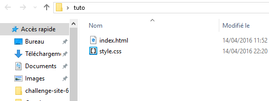
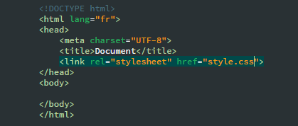
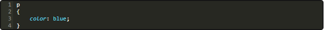
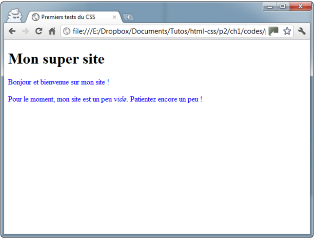

LE CSS ?
CSS ? C'est lui qui vous permet de choisir la couleur de votre texte. Lui qui vous permet de sélectionner la police utilisée sur votre site. Lui encore qui permet de définir la taille du texte, les bordures, le fond… Et aussi, c'est lui qui permet de faire la mise en page de votre site. Vous pourrez dire : je veux que mon menu soit à gauche et occupe telle largeur, que l'en-tête de mon site soit calé en haut et qu'il soit toujours visible, etc.
Voila un exemple de page sans CSS et avec css :
SANS CSS :

AVEC CSS :

Où écrit-on le CSS ?
Vous avez le choix car on peut écrire du code en langage CSS à trois endroits différents :
dans un fichier .css (méthode la plus recommandée) ; dans l'en-tête < head > du fichier HTML ; directement dans les balises du fichier HTML via un attribut style (méthode la moins recommandée).
Dans mon exemple je vais le faire dans un fichier.css (le plus recommandé!)
Tout dabord vous devez créer votre fichier.css dans votre dossier et nommée le style.css ou main.css ou encore fichier.css, le meme endroit ou vous avez créer votre fichier.html su l'exercice precedent sur "comment cree une page html".

Ensuite dans le head de votre html, declarer votre fichier css avec la balise link : < link rel= " stylesheet " href = " style.css " / >comme ci dessous :
Maintenant ouvrer votre fichier.css (style.css ou main.css) dans un editeur (brackets ou autres)
Et commencer a changer les couleurs de vos paragraphe : exemple :
On declare la balise qu'ont veut modifier, la c'est les paragraphes donc ont vois bien ci dessus que j'ai mis p{} et entre ces cotes j'ai mis du code css {color : blue} pour mettre la couleur de tout les paragraphes en bleu, et je pourrait mettre {color:green} pour quil soit vert ou autre red,yellow,brown, ect....
Resultat :
Voila c'est la fin de ce tuto
Cependent vous pouvez vous amusez a modifier la couleur de vos paragraphe et c'est pareille pour les titres sauf que a la place du p{} ont mais h1{}